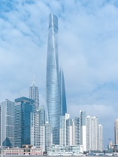
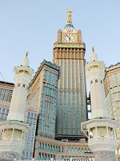
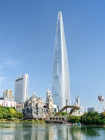
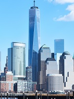

Click on a photograph to read about that building.
Burj Khalifa
The Burj Khalifa, known as the Burj Dubai prior to its inauguration in 2010, is a skyscraper in Dubai, United Arab Emirates. With a total height of 829.8 m (2,722 ft) and a roof height (excluding antenna) of 828 m (2,717 ft), the Burj Khalifa has been the tallest structure in the world since its topping out in late 2008.
Construction of the Burj Khalifa began in 2004, with the exterior completed five years later in 2009. The primary structure is reinforced concrete. The building was opened in 2010 as part of a new development called Downtown Dubai. It is designed to be the centrepiece of large-scale, mixed-use development. The decision to construct the building is reportedly based on the government's decision to diversify from an oil-based economy, and for Dubai to gain international recognition.
Shanghai Tower
he Shanghai Tower is a 632-metre (2,073 ft), 128-story megatall skyscraper in Lujiazui, Pudong, Shanghai. It also has the world's highest observation deck within a building or structure (561.25 m), and the world's fastest elevators at a top speed of 20.5 metres per second (74 km/h; 46 mph). It is the world's second-tallest building by height to architectural top.
Designed by international design firm Gensler and owned by the Shanghai city government, it is the tallest of the world's first triple-adjacent super-tall buildings in Pudong, the other two being the Jin Mao Tower and the Shanghai World Financial Centre. Its tiered construction, designed for high energy efficiency, provides nine separate zones divided between office, retail and leisure use.
Construction work on the tower began in November 2008 and topped out on 3 August 2013. The exterior was completed in summer 2015 and work was considered complete in September 2015.
Abraj Al-Bait Clock Tower
The Abraj Al-Bait is a government-owned megatall complex of seven skyscraper hotels in Mecca, Saudi Arabia. These towers are a part of the King Abdulaziz Endowment Project that strives to modernize the city in catering to its pilgrims. The central hotel tower, the Makkah Royal Clock Tower, A Fairmont Hotel, has the world's largest clock face and is the third-tallest building and fifth-tallest freestanding structure in the world.
The building complex is metres away from the world's largest mosque and Islam's most sacred site, the Great Mosque of Mecca. The developer and contractor of the complex is the Saudi Binladin Group, the Kingdom's largest construction company. It is the world's most expensive building with the total cost of construction equaling US$15 billion. The complex was built after the demolition of the Ajyad Fortress, the 18th-century Ottoman citadel which stood atop a hill overlooking the Grand Mosque. The destruction of the fort in 2002 by the Saudi government sparked Turkish and international outcry.
Ping An Finance Centre
Ping An International Finance Centre is a 115-storey megatall skyscraper in Shenzhen, Guangdong. The building was commissioned by Ping An Insurance and designed by the American architectural firm Kohn Pedersen Fox Associates. It was completed in 2017, becoming the 4th tallest building in the world. The building is located within the Central Business District of Shenzhen in Futian. Its foundation stone was laid on August 29, 2009, and construction started in November the same year.
On March 15, 2013, the construction process was temporarily halted, due to the suspected use of concrete made with unprocessed sea sand, which could corrode the steel structure. Construction resumed on the building after sample testing.
The building topped out on April 30, 2015, and became the second tallest skyscraper in China at a height of 599 metres. The original plan was to add a 60-metre antenna atop the building to surpass the Shanghai Tower and become the tallest building in China. However, in February 2015, it was decided that the antenna would not top the tower due to the possibility that it might obstruct flight paths
Lotte World Tower
Lotte World Tower supertall skyscraper located in Seoul, South Korea. It opened to the public on April 3, 2017 and is currently the tallest building in South Korea, and is the 5th tallest building in the world. After 13 years of planning and site preparation, the tower gained final approval to start construction by the government in November 2010 and the first groundbreaking activities of piling and frame assembly were observed at the construction site in March 2011.
On April 2, 2017, Lotte shot off fireworks to celebrate its official opening.
On Jan 1, 2018, Lotte shot off fireworks with LED laser show for 7 minutes to celebrate New Year's Day and the 2018 PyeongChang Winter Olympics.
One World Trade Center
One World Trade Center is the main building of the rebuilt World Trade Center complex in Lower Manhattan, New York City. It is the tallest building in the Western Hemisphere, and the sixth-tallest in the world. The supertall structure has the same name as the North Tower of the original World Trade Center, which was destroyed in the terrorist attacks of September 11, 2001. The new skyscraper stands on the northwest corner of the 16-acre (6.5 ha) World Trade Center site, on the site of the original 6 World Trade Center.
The building's architect was David Childs, whose firm also designed the Burj Khalifa and the Willis Tower. The construction of below-ground utility relocations, footings, and foundations for the new building began on April 27, 2006. One World Trade Center became the tallest structure in New York City on April 30, 2012, when it surpassed the height of the Empire State Building. The tower's steel structure was topped out on August 30, 2012.
On May 10, 2013, the final component of the skyscraper's spire was installed, making the building, including its spire, reach a total height of 1,776 feet (541 m). Its height in feet is a deliberate reference to the year when the United States Declaration of Independence was signed. The building opened on November 3, 2014; the One World Observatory opened on May 29, 2015



